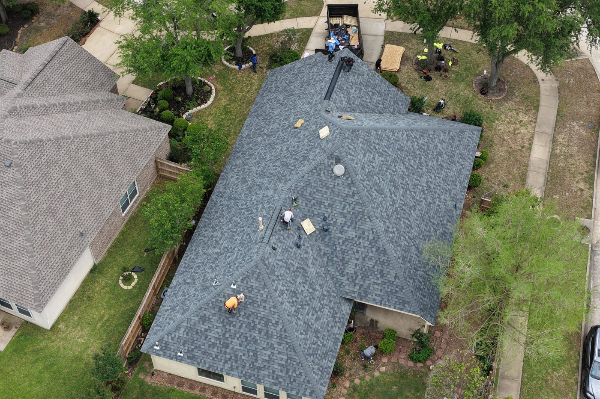

{{r.name}}★★★★★
{{r.text}}
Read MoreCatch small problems before they become costly repairs. Our Houston team performs detailed roof inspections that spot wear, storm damage and hidden leaks, then gives you honest recommendations. Schedule your free roof inspection today!
Schedule Your Roof InspectionA roof inspection is a detailed check of your roof’s condition, designed to uncover problems before they turn into leaks or major damage. Our team examines every part of your roofing system, from shingles and flashing to gutters, attic ventilation and decking.
Whether your roof just made it through a storm or you simply want peace of mind, an inspection tells you exactly where your roof stands and what, if anything, needs attention.

Our thorough checklist makes sure nothing gets missed. We document what we find, give honest recommendations, and help you make informed decisions about your roof.
Houston’s heat, humidity, heavy rain and hurricane season put constant stress on your roof. Regular inspections help you stay ahead of problems and protect your investment.
We treat every home like our own. Our Houston team brings careful attention to detail and local know-how to every inspection, with honest advice you can trust.
{{r.text}}
Read More{{f.a}}